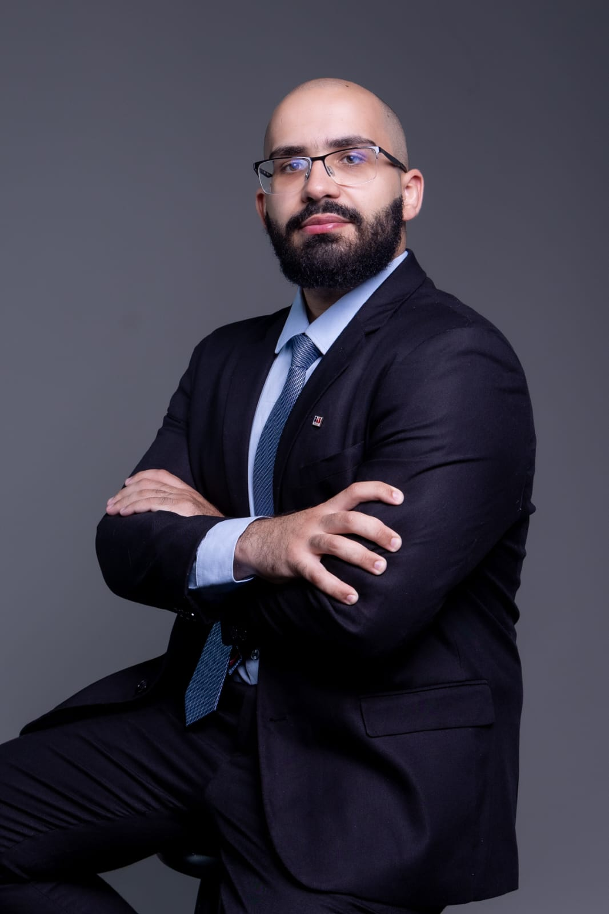
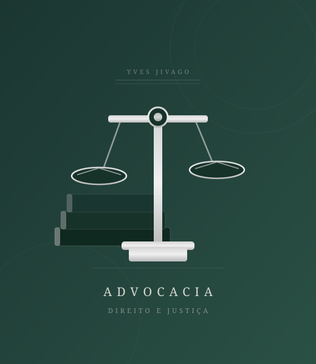

Soluções jurídicas estratégicas em Direito de Família e Direito Médico, com atendimento personalizado e comprometido com a defesa dos seus direitos.
Direito Civil, Processo Civil e Direito Médico
Inglês, Espanhol, Francês e Latim
Personalizado e humanizado

Advogado Civilista
Olá, sou Yves Jivago Leal Felix. Advogado civilista com ampla experiência prática e sólida formação acadêmica, especializado em Direito de Família e Direito Médico.
Pós-graduando em Direito Civil, Processo Civil, Direito Médico e Internacional, minha trajetória é marcada pela proatividade, versatilidade e pela busca constante pela excelência jurídica.
É uma honra prestar consultoria jurídica com seriedade, profundo senso de responsabilidade e total transparência com cada cliente.
Atuação dedicada nas principais demandas do Direito de Família e Direito Médico.
Atuação em fixação, revisão e execução de pensão alimentícia, garantindo o direito à subsistência de forma justa e eficaz.
Assessoria em guarda unilateral ou compartilhada, priorizando sempre o melhor interesse da criança e da família.
Orientação em inventários judiciais e extrajudiciais, assegurando organização patrimonial e proteção dos herdeiros.
Assistência em dissoluções consensuais ou litigiosas, focando na proteção dos direitos patrimoniais de cada parte.
Defesa integral em saúde: erros médicos, negativas de planos, medicamentos e responsabilidade civil de profissionais e instituições.
Defesa do consumidor contra negativas indevidas, buscando garantir acesso imediato ao tratamento necessário.
A justiça é a constante e perpétua vontade de dar a cada um o que é seu.— Ulpiano, jurista romano
Agende uma consultoria para analisarmos seu caso com a atenção e o cuidado que ele merece. Atendimento personalizado e sigiloso.
Falar agora no WhatsApp